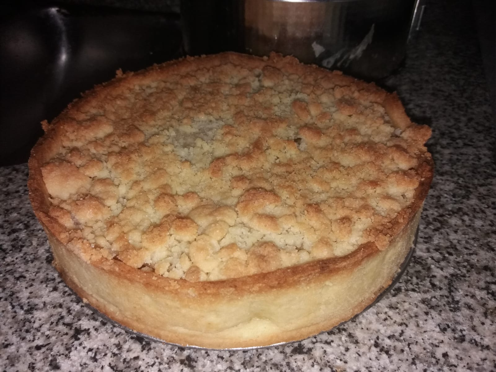
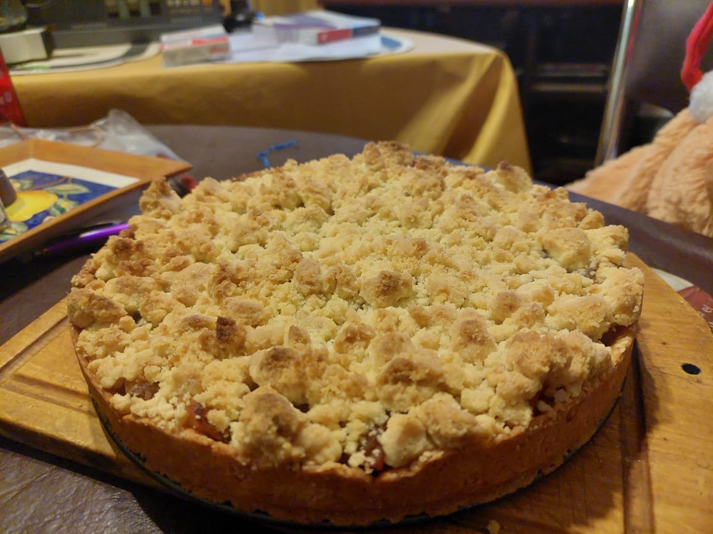

RECETA APFELKUCHEN


Ingredientes
Para la masa:
- 250g Harina
- 100g manteca
- 100g azucar
- 1 huevo
Para el relleno:
- 6 o 7 manzanas(dependiendo el tamaño)
- azucar a gusto
- canela a gusto
Para el Streusel :
- 150g harina
- 75g manteca
- 75g azucar
Preparacion:
Masa:
- Con una espatula o cuchara de madera, revolver en un bowl el huevo con el azucar.
- Agregar la manteca a temperatura ambiente e incorporarla SIEMPRE CON ESPATULA, NO USAR LAS MANOS.
- Tamizar la harina y agregarla a la preparacion.
- Integrar bien todos los ingrediente, tapar la masa con un repasador y guardar 30 minutos en la heladera.
Relleno:
- Pelar y limpiar bien las manzanas
- Cortarlas en gajos
- Colocar en una ollita un poco de agua(poca, solo para llenar la base), las manzanas cortadas, el azucar y la canela a gusto.
- Tapar la olla y dejar que se cocinen a fuego medio-bajo un poco las manzanas hasta que esten un poco blandas
Streusel :
- Incorporar las harina, la manteca a temperatura ambiente y el azucar en un bowl
- Integrar todo con una cuchara o espatula
- Tapar con un repasador o envolverla en un film y guardar en la heladera entre 20 y 30 minutos
Armado de la torta:
- Estirar la masa en una mesada enharinada sin amasar
- Cubrir la base y los bordes de un molde previamente enmantecado y enharinado la masa
- Colocar en un horno a 170° hasta que se empiece a dorar
- Colocar las manzanas cocidas cobre la masa
- Romper la masa de Streusel sobre las manzanas. Deben quedar como pequeñas piedritas, NO hecho polvo
- Colocar nuevamente en el horno hasta que el Streusel este dorado.
- Retirar del horno y dejar enfriar. Y LISTO PARA COMER